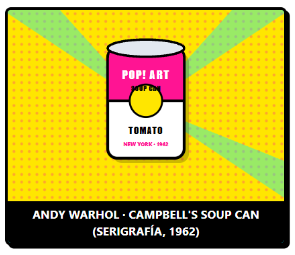

ENSAYO VISUAL - NUEVA YORK 1962
DE LA LATA DE CONSERVA A ICONO DEL ARTE MODERNO
Por Redacción The Factory • • de lectura • 38 comentarios

EL MANIFIESTO DE LO COTIDIANO
El Pop Art nació como una reacción explosiva contra el expresionismo abstracto. En lugar de buscar la introspección mística, artistas como Warhol y Lichtenstein miraron a los supermercados, vallas publicitarias y tiras cómicas para democratizar la experiencia estética.
"Todo el mundo bebe la misma Coca-Cola: el presidente bebe Coca-Cola, Liz Taylor bebe Coca-Cola y tú también puedes beberla."
TÉCNICA DE SERIGRAFÍA INDUSTRIAL
La repetición en serie eliminó la huella personal del pincel. Al utilizar pantallas de seda y tintas industriales planas, las obras imitaban la producción masiva de las fábricas.
RASGOS GRÁFICOS INCONFUNDIBLES
- Líneas negras gruesas: Inspiradas en los cómics.
- Puntos Ben-Day: Textura óptica de imprenta.
- Colores puros: Sin matices ni claroscuros clásicos.